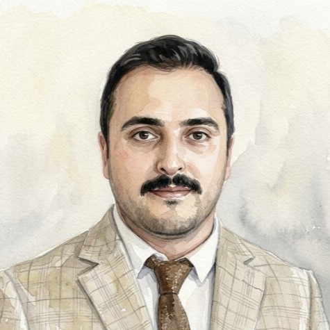
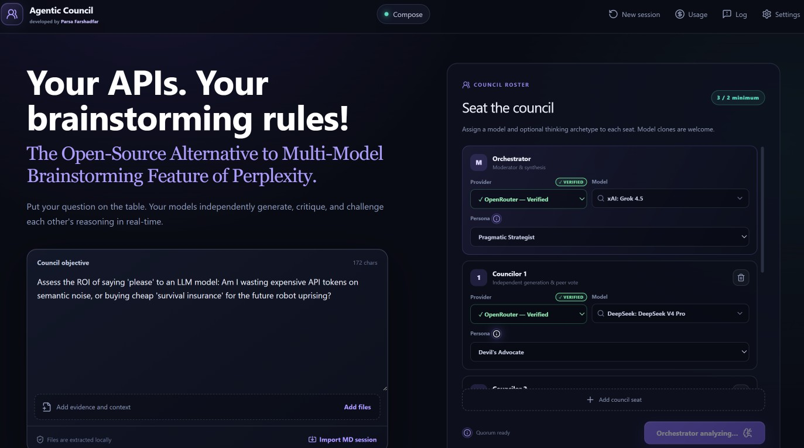
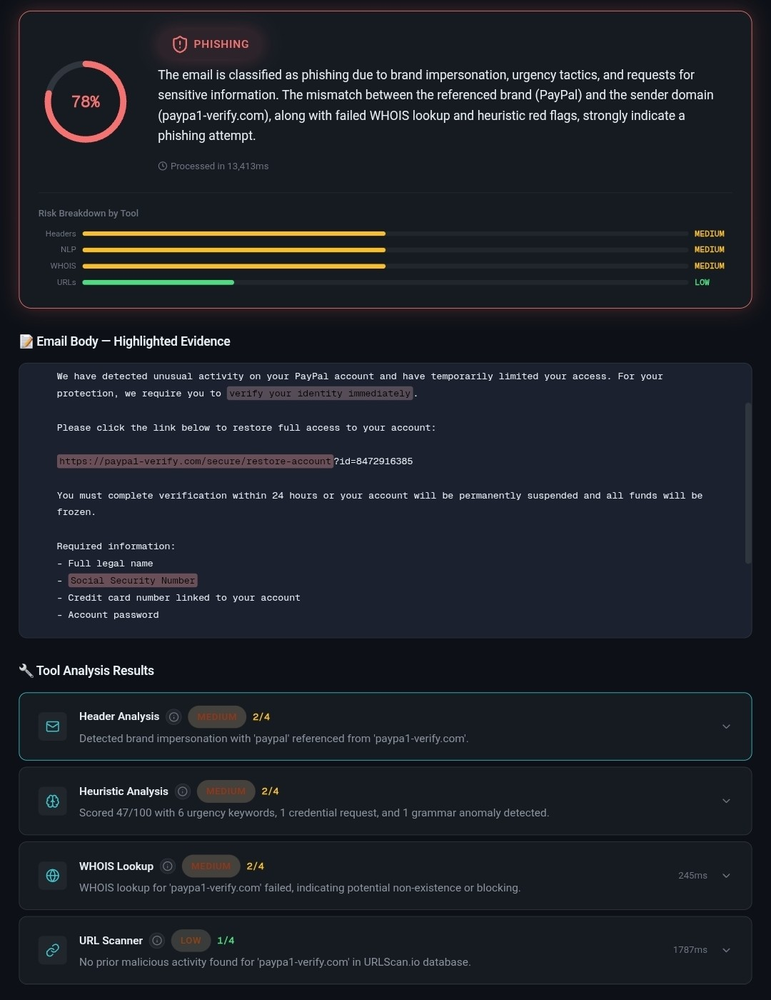
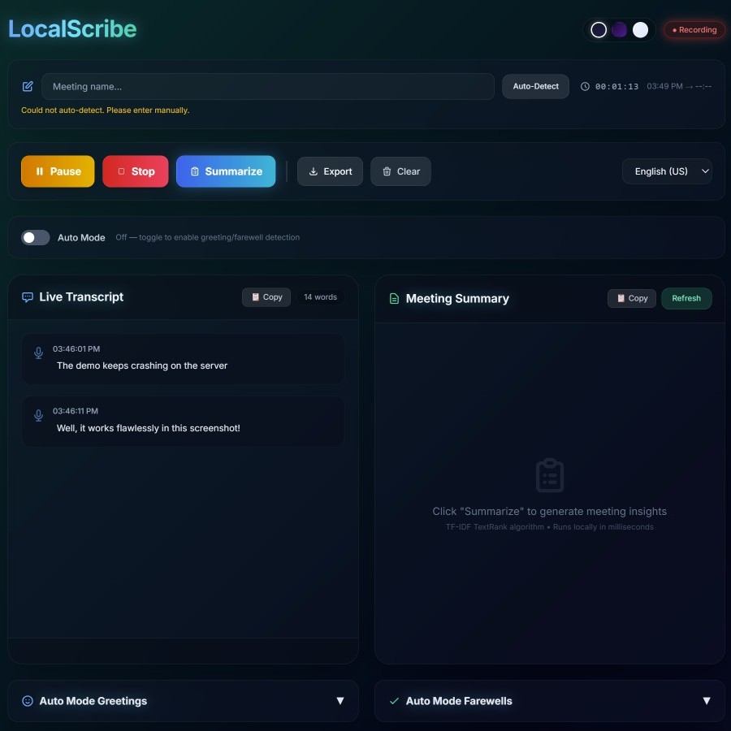
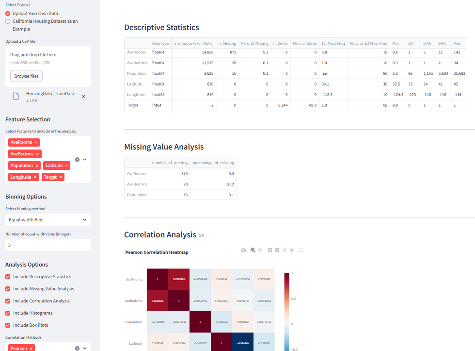
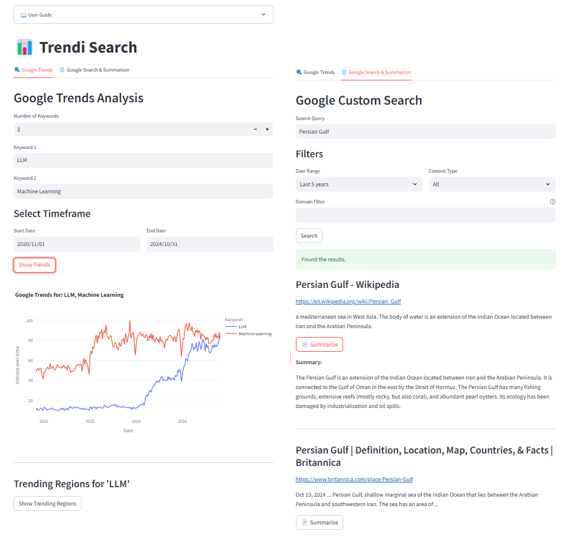
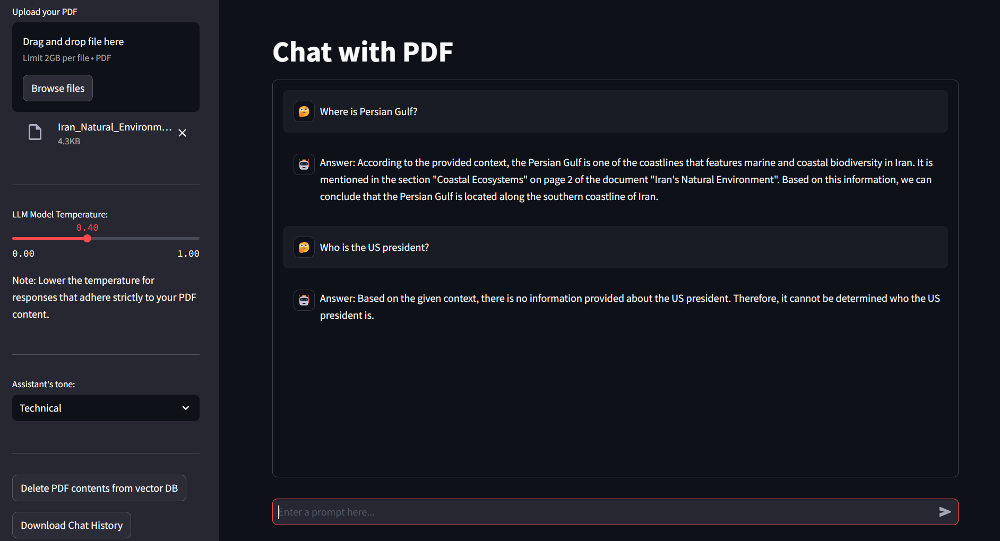
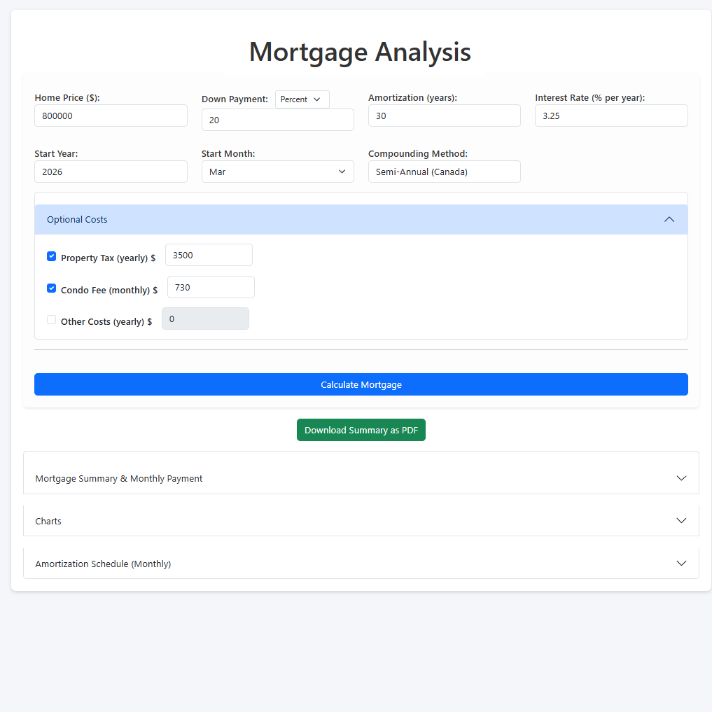
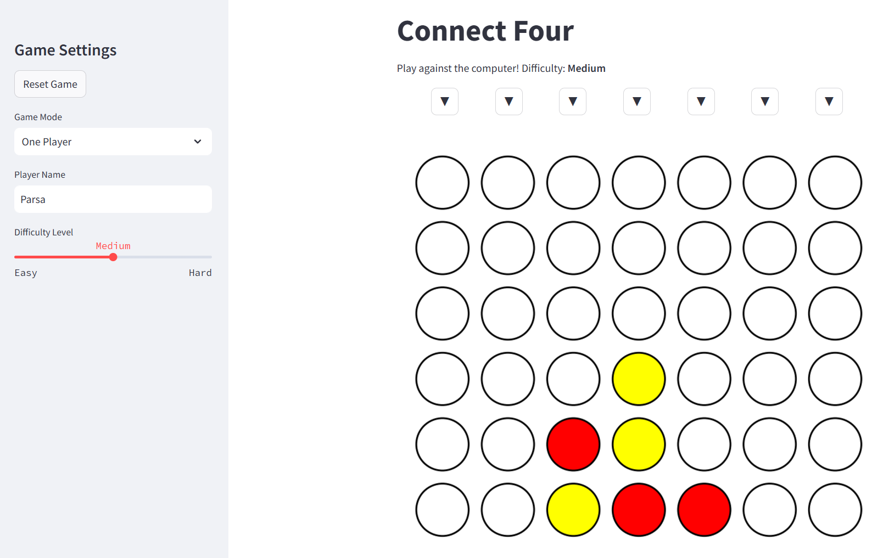
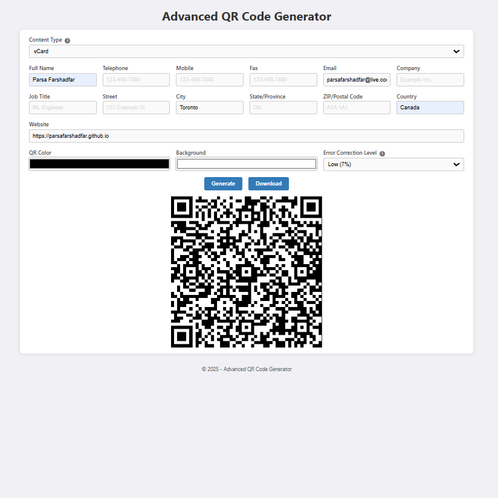

Turning complex data into confident decisions
Building production-grade AI systems
Academic foundations in Computer Engineering
M.Sc. Computer Engineering
B.Sc. Computer Engineering
Industry-recognized credentials
Expertise across the full AI/ML stack
Hands-on AI/ML work beyond the day job








